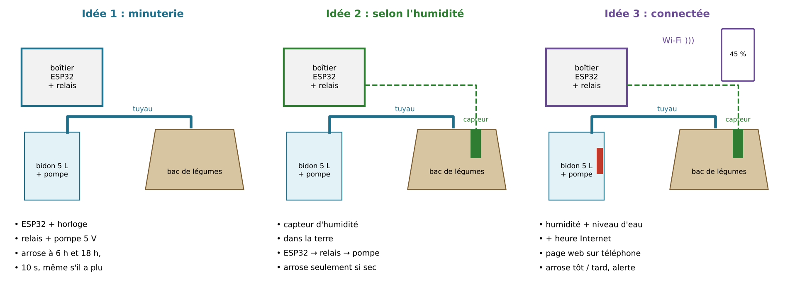
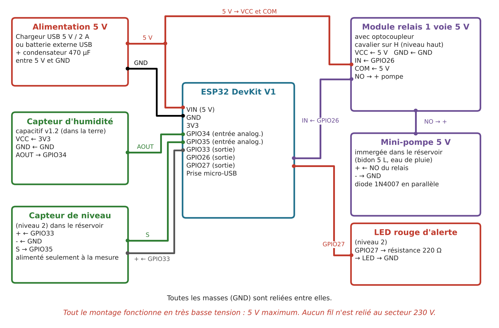
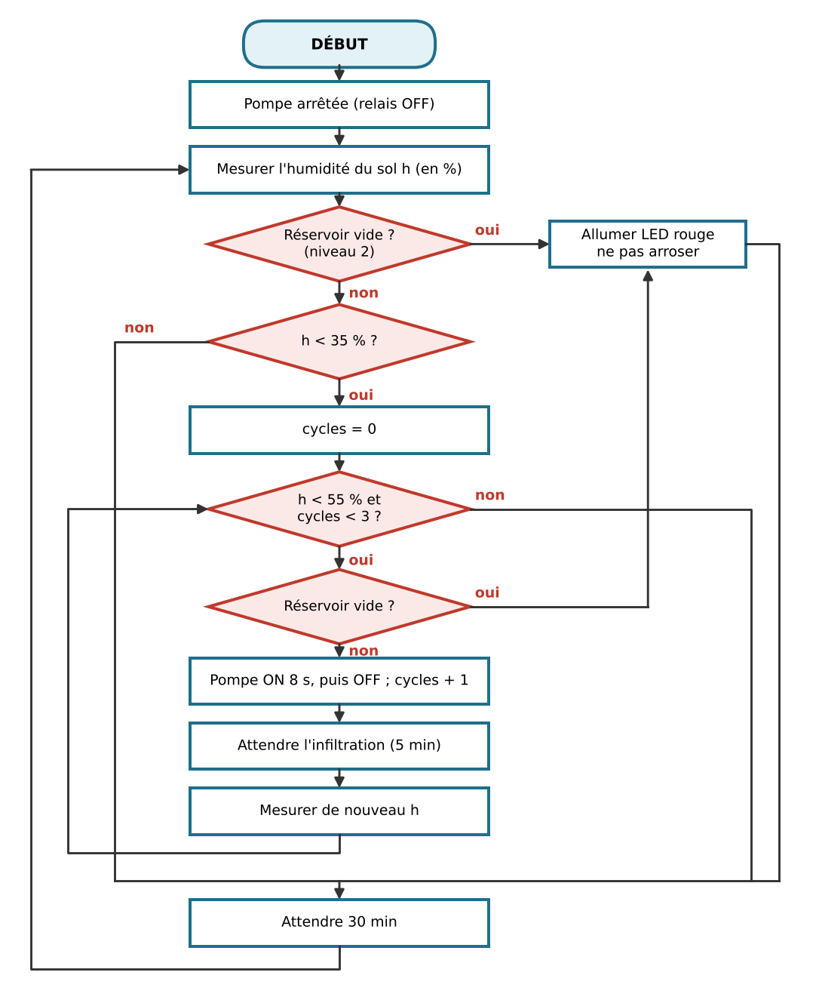
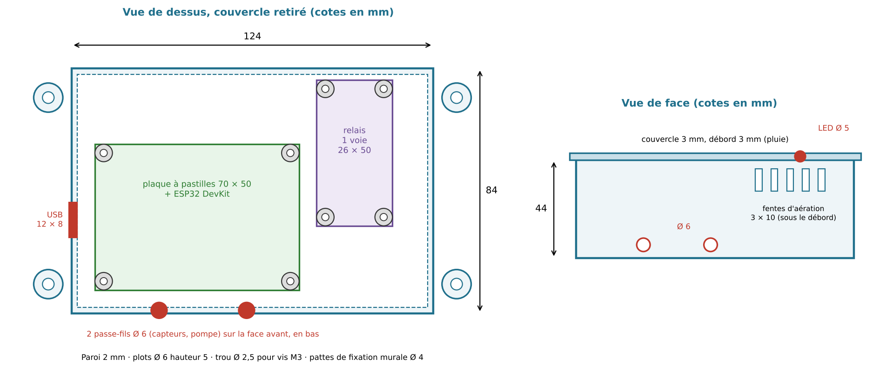
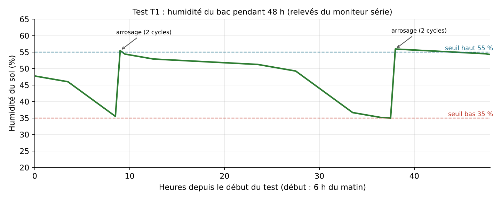

1Le projet en bref
Arroser « à l’œil », c’est souvent trop ou trop peu. Le système mesure l’humidité du sol avec un capteur capacitif. Quand la terre est trop sèche, la carte ferme un relais 5 V qui alimente une mini-pompe 5 V ; elle s’arrête dès que la terre est assez humide.
La seule partie mécanique est le boîtier de la carte, conçu dans FreeCAD. Tout fonctionne en très basse tension (5 V).
Un exemple, pas un modèle à copier. Ce projet témoin a été rédigé par l’enseignant(e) pour montrer une trace de niveau 7-8. Il porte sur un autre sujet que le tien. Les personnes, les enquêtes et les tests avec des utilisateurs sont inventés pour l’exemple ; c’est signalé dans le document.
Lire la trace complète en ligne, de A1 à D4. C’est la même trace que le document Word, présentée comme un article.
2Les figures du projet










3Trois versions du programme
| Carte | Langage | Fichier |
|---|---|---|
| Arduino Uno | Arduino (C++) | arrosage_arduino.ino |
| ESP32 | Arduino (C++) | arrosage_esp32.ino, et arrosage_esp32_niveau3.ino avec page Wi-Fi |
| ESP32 | MicroPython | arrosage_niveau1_2.py, et arrosage_niveau3.py avec page Wi-Fi |
Le code est écrit pour des débutants : pas de raccourci, chaque étape est écrite en entier. Il n’a pas encore été essayé sur une vraie carte.
Lire le code : arrosage_arduino.ino (130 lignes)
// Projet témoin : arrosage automatique du jardin
// Design PEI 5 - Unités 1 et 2
// Carte : Arduino Uno
// Alimentation : 5 V uniquement (câble USB ou chargeur USB 5 V)
//
// Niveau 1 : capteur d'humidité du sol + relais + mini-pompe 5 V
// Niveau 2 : + capteur de niveau d'eau dans le bidon + LED rouge d'alerte
// ----- 1. Les broches -----
int PIN_SOL = A0; // capteur d'humidité (sortie AOUT)
int PIN_NIVEAU = A1; // capteur de niveau d'eau (sortie S)
int PIN_NIV_ALIM = 6; // alimente le capteur de niveau seulement pendant la mesure
int PIN_RELAIS = 7; // entrée IN du module relais (cavalier sur H)
int PIN_LED = 8; // LED rouge avec une résistance de 220 ohms
// ----- 2. Les valeurs de calibration (à mesurer avec TON capteur) -----
int SOL_SEC = 560; // valeur lue quand le capteur est dans l'air
int SOL_MOUILLE = 270; // valeur lue quand le capteur est dans un verre d'eau
int NIVEAU_MIN = 200; // en dessous de cette valeur, le bidon est presque vide
// ----- 3. Les réglages -----
int NIVEAU_PROJET = 2; // écrire 1 ou 2
int SEUIL_BAS = 35; // en dessous de 35 %, on arrose
int SEUIL_HAUT = 55; // à 55 %, on arrête
int CYCLES_MAX = 3; // 3 doses au maximum, pour la sécurité
long DUREE_POMPE = 8000; // 8 secondes de pompe par dose
long INFILTRATION = 20000; // en classe : 20 s. Dans le jardin : 300000 (5 minutes)
long ENTRE_MESURES = 10000; // en classe : 10 s. Dans le jardin : 1800000 (30 minutes)
// Lit 10 fois le capteur et renvoie la moyenne
int lireMoyenne(int broche) {
long somme = 0;
int i = 0;
while (i < 10) {
somme = somme + analogRead(broche);
delay(20);
i = i + 1;
}
int moyenne = somme / 10;
return moyenne;
}
// Renvoie l'humidité du sol en % (0 = sec, 100 = dans l'eau)
int humiditeSol() {
int brut = lireMoyenne(PIN_SOL);
long ecart = SOL_SEC - brut;
long pourcent = ecart * 100 / (SOL_SEC - SOL_MOUILLE);
if (pourcent < 0) {
pourcent = 0;
}
if (pourcent > 100) {
pourcent = 100;
}
return pourcent;
}
// Renvoie true s'il reste assez d'eau dans le bidon
bool reservoirOK() {
if (NIVEAU_PROJET == 1) {
return true; // niveau 1 : pas de capteur de niveau
}
digitalWrite(PIN_NIV_ALIM, HIGH); // on allume le capteur
delay(50);
int valeur = lireMoyenne(PIN_NIVEAU);
digitalWrite(PIN_NIV_ALIM, LOW); // on l'éteint : il s'abîme moins vite
Serial.print(" Niveau du bidon = ");
Serial.println(valeur);
if (valeur > NIVEAU_MIN) {
return true;
} else {
return false;
}
}
// Fait marcher la pompe pendant une dose
void arroser() {
Serial.println(" Pompe ON");
digitalWrite(PIN_RELAIS, HIGH);
delay(DUREE_POMPE);
digitalWrite(PIN_RELAIS, LOW);
Serial.println(" Pompe OFF");
}
void setup() {
pinMode(PIN_RELAIS, OUTPUT);
digitalWrite(PIN_RELAIS, LOW); // la pompe est arrêtée au démarrage
pinMode(PIN_LED, OUTPUT);
pinMode(PIN_NIV_ALIM, OUTPUT);
digitalWrite(PIN_NIV_ALIM, LOW);
Serial.begin(9600);
Serial.println("Arrosage automatique : demarrage");
}
void loop() {
int h = humiditeSol();
Serial.print("Humidite du sol = ");
Serial.print(h);
Serial.println(" %");
bool eau = reservoirOK();
if (eau == true) {
digitalWrite(PIN_LED, LOW);
} else {
digitalWrite(PIN_LED, HIGH); // le bidon est vide : alerte
}
if (h < SEUIL_BAS && eau == true) {
int cycles = 0;
while (h < SEUIL_HAUT && cycles < CYCLES_MAX && eau == true) {
arroser();
cycles = cycles + 1;
delay(INFILTRATION); // on laisse l'eau descendre dans la terre
h = humiditeSol();
Serial.print(" Apres la dose ");
Serial.print(cycles);
Serial.print(" : ");
Serial.print(h);
Serial.println(" %");
eau = reservoirOK();
}
if (eau == false) {
digitalWrite(PIN_LED, HIGH);
}
}
delay(ENTRE_MESURES);
}
Lire le code : arrosage_esp32.ino (130 lignes)
// Projet témoin : arrosage automatique du jardin
// Design PEI 5 - Unités 1 et 2
// Carte : ESP32 DevKit V1, programmé avec Arduino IDE
// Alimentation : 5 V uniquement (câble USB ou chargeur USB 5 V)
//
// Niveau 1 : capteur d'humidité du sol + relais + mini-pompe 5 V
// Niveau 2 : + capteur de niveau d'eau dans le bidon + LED rouge d'alerte
// ----- 1. Les broches -----
int PIN_SOL = 34; // capteur d'humidité (sortie AOUT)
int PIN_NIVEAU = 35; // capteur de niveau d'eau (sortie S)
int PIN_NIV_ALIM = 33; // alimente le capteur de niveau seulement pendant la mesure
int PIN_RELAIS = 26; // entrée IN du module relais (cavalier sur H)
int PIN_LED = 27; // LED rouge avec une résistance de 220 ohms
// ----- 2. Les valeurs de calibration (à mesurer avec TON capteur) -----
int SOL_SEC = 3000; // valeur lue quand le capteur est dans l'air
int SOL_MOUILLE = 1300; // valeur lue quand le capteur est dans un verre d'eau
int NIVEAU_MIN = 800; // en dessous de cette valeur, le bidon est presque vide
// ----- 3. Les réglages -----
int NIVEAU_PROJET = 2; // écrire 1 ou 2
int SEUIL_BAS = 35; // en dessous de 35 %, on arrose
int SEUIL_HAUT = 55; // à 55 %, on arrête
int CYCLES_MAX = 3; // 3 doses au maximum, pour la sécurité
long DUREE_POMPE = 8000; // 8 secondes de pompe par dose
long INFILTRATION = 20000; // en classe : 20 s. Dans le jardin : 300000 (5 minutes)
long ENTRE_MESURES = 10000; // en classe : 10 s. Dans le jardin : 1800000 (30 minutes)
// Lit 10 fois le capteur et renvoie la moyenne
int lireMoyenne(int broche) {
long somme = 0;
int i = 0;
while (i < 10) {
somme = somme + analogRead(broche);
delay(20);
i = i + 1;
}
int moyenne = somme / 10;
return moyenne;
}
// Renvoie l'humidité du sol en % (0 = sec, 100 = dans l'eau)
int humiditeSol() {
int brut = lireMoyenne(PIN_SOL);
long ecart = SOL_SEC - brut;
long pourcent = ecart * 100 / (SOL_SEC - SOL_MOUILLE);
if (pourcent < 0) {
pourcent = 0;
}
if (pourcent > 100) {
pourcent = 100;
}
return pourcent;
}
// Renvoie true s'il reste assez d'eau dans le bidon
bool reservoirOK() {
if (NIVEAU_PROJET == 1) {
return true; // niveau 1 : pas de capteur de niveau
}
digitalWrite(PIN_NIV_ALIM, HIGH); // on allume le capteur
delay(50);
int valeur = lireMoyenne(PIN_NIVEAU);
digitalWrite(PIN_NIV_ALIM, LOW); // on l'éteint : il s'abîme moins vite
Serial.print(" Niveau du bidon = ");
Serial.println(valeur);
if (valeur > NIVEAU_MIN) {
return true;
} else {
return false;
}
}
// Fait marcher la pompe pendant une dose
void arroser() {
Serial.println(" Pompe ON");
digitalWrite(PIN_RELAIS, HIGH);
delay(DUREE_POMPE);
digitalWrite(PIN_RELAIS, LOW);
Serial.println(" Pompe OFF");
}
void setup() {
pinMode(PIN_RELAIS, OUTPUT);
digitalWrite(PIN_RELAIS, LOW); // la pompe est arrêtée au démarrage
pinMode(PIN_LED, OUTPUT);
pinMode(PIN_NIV_ALIM, OUTPUT);
digitalWrite(PIN_NIV_ALIM, LOW);
Serial.begin(115200);
Serial.println("Arrosage automatique : demarrage");
}
void loop() {
int h = humiditeSol();
Serial.print("Humidite du sol = ");
Serial.print(h);
Serial.println(" %");
bool eau = reservoirOK();
if (eau == true) {
digitalWrite(PIN_LED, LOW);
} else {
digitalWrite(PIN_LED, HIGH); // le bidon est vide : alerte
}
if (h < SEUIL_BAS && eau == true) {
int cycles = 0;
while (h < SEUIL_HAUT && cycles < CYCLES_MAX && eau == true) {
arroser();
cycles = cycles + 1;
delay(INFILTRATION); // on laisse l'eau descendre dans la terre
h = humiditeSol();
Serial.print(" Apres la dose ");
Serial.print(cycles);
Serial.print(" : ");
Serial.print(h);
Serial.println(" %");
eau = reservoirOK();
}
if (eau == false) {
digitalWrite(PIN_LED, HIGH);
}
}
delay(ENTRE_MESURES);
}
Lire le code : arrosage_esp32_niveau3.ino (233 lignes)
// Projet témoin : arrosage automatique du jardin - NIVEAU 3
// Design PEI 5 - Unités 1 et 2
// Carte : ESP32 DevKit V1, programmé avec Arduino IDE (même câblage que le niveau 2)
// Alimentation : 5 V uniquement
//
// Ce programme fait tout ce que fait le niveau 2, et en plus :
// - il prend l'heure sur Internet et arrose seulement tôt le matin ou le soir
// (moins d'évaporation qu'en plein soleil) ;
// - il affiche une page web sur le téléphone : humidité, bidon, historique.
#include <WiFi.h>
#include <WebServer.h>
#include <time.h>
// ----- 1. Le Wi-Fi -----
const char* WIFI_NOM = "NOM_DU_WIFI";
const char* WIFI_MDP = "MOT_DE_PASSE";
// ----- 2. Les broches -----
int PIN_SOL = 34;
int PIN_NIVEAU = 35;
int PIN_NIV_ALIM = 33;
int PIN_RELAIS = 26;
int PIN_LED = 27;
// ----- 3. Les valeurs de calibration -----
int SOL_SEC = 3000;
int SOL_MOUILLE = 1300;
int NIVEAU_MIN = 800;
// ----- 4. Les réglages -----
int SEUIL_BAS = 35;
int SEUIL_HAUT = 55;
int CYCLES_MAX = 3;
long DUREE_POMPE = 8000; // 8 secondes par dose
unsigned long ENTRE_MESURES = 300000; // une mesure toutes les 5 minutes (c'est aussi le temps d'infiltration)
// ----- 5. Les variables qui changent pendant le programme -----
WebServer serveur(80);
int historique[24]; // les 24 dernières mesures (2 heures)
int nbMesures = 0;
int derniereHumidite = 0;
bool dernierBidonOK = true;
bool enArrosage = false;
int cycles = 0;
unsigned long derniereMesure = 0;
int lireMoyenne(int broche) {
long somme = 0;
int i = 0;
while (i < 10) {
somme = somme + analogRead(broche);
delay(20);
i = i + 1;
}
int moyenne = somme / 10;
return moyenne;
}
int humiditeSol() {
int brut = lireMoyenne(PIN_SOL);
long ecart = SOL_SEC - brut;
long pourcent = ecart * 100 / (SOL_SEC - SOL_MOUILLE);
if (pourcent < 0) {
pourcent = 0;
}
if (pourcent > 100) {
pourcent = 100;
}
return pourcent;
}
bool reservoirOK() {
digitalWrite(PIN_NIV_ALIM, HIGH);
delay(50);
int valeur = lireMoyenne(PIN_NIVEAU);
digitalWrite(PIN_NIV_ALIM, LOW);
if (valeur > NIVEAU_MIN) {
return true;
} else {
return false;
}
}
void arroser() {
Serial.println(" Pompe ON");
digitalWrite(PIN_RELAIS, HIGH);
delay(DUREE_POMPE);
digitalWrite(PIN_RELAIS, LOW);
Serial.println(" Pompe OFF");
}
// Renvoie true entre 5 h et 9 h, ou entre 17 h et 20 h.
// Si l'heure n'est pas connue (pas de Wi-Fi), on autorise l'arrosage.
bool heureAutorisee() {
struct tm maintenant;
bool heureConnue = getLocalTime(&maintenant, 100);
if (heureConnue == false) {
return true;
}
int heure = maintenant.tm_hour;
if (heure >= 5 && heure < 9) {
return true;
}
if (heure >= 17 && heure < 20) {
return true;
}
return false;
}
// Ajoute une mesure à la fin de l'historique.
// Quand il est plein, on décale tout d'une case vers la gauche.
void ajouterHistorique(int valeur) {
if (nbMesures < 24) {
historique[nbMesures] = valeur;
nbMesures = nbMesures + 1;
} else {
int i = 0;
while (i < 23) {
historique[i] = historique[i + 1];
i = i + 1;
}
historique[23] = valeur;
}
}
// Fabrique la page web et l'envoie au téléphone
void pageAccueil() {
String page = "<!DOCTYPE html><html><head><meta charset='utf-8'>";
page = page + "<meta name='viewport' content='width=device-width'>";
page = page + "<meta http-equiv='refresh' content='30'>";
page = page + "<title>Arrosage</title></head><body style='font-family:sans-serif'>";
page = page + "<h1>Arrosage du jardin</h1>";
page = page + "<p>Humidité du sol : <b>" + String(derniereHumidite) + " %</b></p>";
if (dernierBidonOK == true) {
page = page + "<p>Bidon : <b>OK</b></p>";
} else {
page = page + "<p>Bidon : <b>VIDE, à remplir</b></p>";
}
if (heureAutorisee() == true) {
page = page + "<p>Arrosage autorisé maintenant : oui</p>";
} else {
page = page + "<p>Arrosage autorisé maintenant : non</p>";
}
page = page + "<p>Historique (de la plus ancienne à la plus récente) :<br>";
int i = 0;
while (i < nbMesures) {
page = page + String(historique[i]) + " % ";
i = i + 1;
}
page = page + "</p></body></html>";
serveur.send(200, "text/html", page);
}
void setup() {
pinMode(PIN_RELAIS, OUTPUT);
digitalWrite(PIN_RELAIS, LOW);
pinMode(PIN_LED, OUTPUT);
pinMode(PIN_NIV_ALIM, OUTPUT);
digitalWrite(PIN_NIV_ALIM, LOW);
Serial.begin(115200);
// Connexion au Wi-Fi : on essaie pendant 10 secondes au maximum
WiFi.begin(WIFI_NOM, WIFI_MDP);
int essais = 0;
while (WiFi.status() != WL_CONNECTED && essais < 20) {
delay(500);
essais = essais + 1;
}
if (WiFi.status() == WL_CONNECTED) {
Serial.print("Page web : http://");
Serial.println(WiFi.localIP());
configTime(0, 0, "pool.ntp.org"); // Lomé : heure GMT, pas d'heure d'été
} else {
Serial.println("Pas de Wi-Fi : le systeme marche quand meme, comme le niveau 2");
}
serveur.on("/", pageAccueil);
serveur.begin();
derniereMesure = millis() - ENTRE_MESURES; // pour faire la première mesure tout de suite
}
void loop() {
// 1. Répondre au téléphone s'il demande la page
serveur.handleClient();
// 2. Toutes les 5 minutes : mesurer et décider
if (millis() - derniereMesure >= ENTRE_MESURES) {
derniereMesure = millis();
derniereHumidite = humiditeSol();
dernierBidonOK = reservoirOK();
ajouterHistorique(derniereHumidite);
Serial.print("Humidite du sol = ");
Serial.print(derniereHumidite);
Serial.println(" %");
if (dernierBidonOK == true) {
digitalWrite(PIN_LED, LOW);
} else {
digitalWrite(PIN_LED, HIGH);
}
// Faut-il commencer à arroser ?
if (enArrosage == false && derniereHumidite < SEUIL_BAS) {
enArrosage = true;
cycles = 0;
}
// Faut-il arrêter ?
if (enArrosage == true && derniereHumidite >= SEUIL_HAUT) {
enArrosage = false;
}
if (enArrosage == true && cycles >= CYCLES_MAX) {
enArrosage = false;
}
// On donne une dose seulement si le bidon a de l'eau et si l'heure est bonne
if (enArrosage == true && dernierBidonOK == true && heureAutorisee() == true) {
arroser();
cycles = cycles + 1;
}
}
}
Lire le code : arrosage_niveau1_2.py (113 lignes)
# Projet témoin : arrosage automatique du jardin
# Design PEI 5 - Unités 1 et 2
# Carte : ESP32 avec MicroPython (programmé avec Thonny)
# Pour que le programme démarre tout seul, l'enregistrer sur l'ESP32 sous le nom main.py
# Alimentation : 5 V uniquement (câble USB ou chargeur USB 5 V)
#
# Niveau 1 : capteur d'humidité du sol + relais + mini-pompe 5 V
# Niveau 2 : + capteur de niveau d'eau dans le bidon + LED rouge d'alerte
from machine import Pin, ADC
import time
# ----- 1. Les broches -----
capteur_sol = ADC(Pin(34)) # capteur d'humidité (sortie AOUT)
capteur_sol.atten(ADC.ATTN_11DB) # pour mesurer de 0 à 3,3 V
capteur_niveau = ADC(Pin(35)) # capteur de niveau d'eau (sortie S)
capteur_niveau.atten(ADC.ATTN_11DB)
alim_niveau = Pin(33, Pin.OUT) # alimente le capteur de niveau seulement pendant la mesure
relais = Pin(26, Pin.OUT) # entrée IN du module relais (cavalier sur H)
led = Pin(27, Pin.OUT) # LED rouge avec une résistance de 220 ohms
# ----- 2. Les valeurs de calibration (à mesurer avec TON capteur) -----
SOL_SEC = 3000 # valeur lue quand le capteur est dans l'air
SOL_MOUILLE = 1300 # valeur lue quand le capteur est dans un verre d'eau
NIVEAU_MIN = 800 # en dessous de cette valeur, le bidon est presque vide
# ----- 3. Les réglages -----
NIVEAU_PROJET = 2 # écrire 1 ou 2
SEUIL_BAS = 35 # en dessous de 35 %, on arrose
SEUIL_HAUT = 55 # à 55 %, on arrête
CYCLES_MAX = 3 # 3 doses au maximum, pour la sécurité
DUREE_POMPE = 8 # 8 secondes de pompe par dose
INFILTRATION = 20 # en classe : 20 s. Dans le jardin : 300 (5 minutes)
ENTRE_MESURES = 10 # en classe : 10 s. Dans le jardin : 1800 (30 minutes)
# Lit 10 fois le capteur et renvoie la moyenne
def lire_moyenne(capteur):
somme = 0
i = 0
while i < 10:
somme = somme + capteur.read()
time.sleep(0.02)
i = i + 1
moyenne = int(somme / 10)
return moyenne
# Renvoie l'humidité du sol en % (0 = sec, 100 = dans l'eau)
def humidite_sol():
brut = lire_moyenne(capteur_sol)
ecart = SOL_SEC - brut
pourcent = int(ecart * 100 / (SOL_SEC - SOL_MOUILLE))
if pourcent < 0:
pourcent = 0
if pourcent > 100:
pourcent = 100
return pourcent
# Renvoie True s'il reste assez d'eau dans le bidon
def reservoir_ok():
if NIVEAU_PROJET == 1:
return True # niveau 1 : pas de capteur de niveau
alim_niveau.value(1) # on allume le capteur
time.sleep(0.05)
valeur = lire_moyenne(capteur_niveau)
alim_niveau.value(0) # on l'éteint : il s'abîme moins vite
print(" Niveau du bidon =", valeur)
if valeur > NIVEAU_MIN:
return True
else:
return False
# Fait marcher la pompe pendant une dose
def arroser():
print(" Pompe ON")
relais.value(1)
time.sleep(DUREE_POMPE)
relais.value(0)
print(" Pompe OFF")
# ----- 4. Le programme principal -----
relais.value(0) # la pompe est arrêtée au démarrage
alim_niveau.value(0)
led.value(0)
print("Arrosage automatique : demarrage")
while True:
h = humidite_sol()
print("Humidite du sol =", h, "%")
eau = reservoir_ok()
if eau == True:
led.value(0)
else:
led.value(1) # le bidon est vide : alerte
if h < SEUIL_BAS and eau == True:
cycles = 0
while h < SEUIL_HAUT and cycles < CYCLES_MAX and eau == True:
arroser()
cycles = cycles + 1
time.sleep(INFILTRATION) # on laisse l'eau descendre dans la terre
h = humidite_sol()
print(" Apres la dose", cycles, ":", h, "%")
eau = reservoir_ok()
if eau == False:
led.value(1)
time.sleep(ENTRE_MESURES)
Lire le code : arrosage_niveau3.py (206 lignes)
# Projet témoin : arrosage automatique du jardin - NIVEAU 3
# Design PEI 5 - Unités 1 et 2
# Carte : ESP32 avec MicroPython (même câblage que le niveau 2)
# Pour que le programme démarre tout seul, l'enregistrer sur l'ESP32 sous le nom main.py
# Alimentation : 5 V uniquement
#
# Ce programme fait tout ce que fait le niveau 2, et en plus :
# - il prend l'heure sur Internet et arrose seulement tôt le matin ou le soir
# (moins d'évaporation qu'en plein soleil) ;
# - il affiche une page web sur le téléphone : humidité, bidon, historique.
from machine import Pin, ADC
import time
import network
import socket
import ntptime
# ----- 1. Le Wi-Fi -----
WIFI_NOM = "NOM_DU_WIFI"
WIFI_MDP = "MOT_DE_PASSE"
# ----- 2. Les broches -----
capteur_sol = ADC(Pin(34))
capteur_sol.atten(ADC.ATTN_11DB)
capteur_niveau = ADC(Pin(35))
capteur_niveau.atten(ADC.ATTN_11DB)
alim_niveau = Pin(33, Pin.OUT)
relais = Pin(26, Pin.OUT)
led = Pin(27, Pin.OUT)
# ----- 3. Les valeurs de calibration -----
SOL_SEC = 3000
SOL_MOUILLE = 1300
NIVEAU_MIN = 800
# ----- 4. Les réglages -----
SEUIL_BAS = 35
SEUIL_HAUT = 55
CYCLES_MAX = 3
DUREE_POMPE = 8 # 8 secondes par dose
ENTRE_MESURES = 300 # une mesure toutes les 5 minutes (c'est aussi le temps d'infiltration)
def lire_moyenne(capteur):
somme = 0
i = 0
while i < 10:
somme = somme + capteur.read()
time.sleep(0.02)
i = i + 1
moyenne = int(somme / 10)
return moyenne
def humidite_sol():
brut = lire_moyenne(capteur_sol)
ecart = SOL_SEC - brut
pourcent = int(ecart * 100 / (SOL_SEC - SOL_MOUILLE))
if pourcent < 0:
pourcent = 0
if pourcent > 100:
pourcent = 100
return pourcent
def reservoir_ok():
alim_niveau.value(1)
time.sleep(0.05)
valeur = lire_moyenne(capteur_niveau)
alim_niveau.value(0)
if valeur > NIVEAU_MIN:
return True
else:
return False
def arroser():
print(" Pompe ON")
relais.value(1)
time.sleep(DUREE_POMPE)
relais.value(0)
print(" Pompe OFF")
# Renvoie True entre 5 h et 9 h, ou entre 17 h et 20 h.
# Si l'heure n'est pas connue (pas de Wi-Fi), on autorise l'arrosage.
def heure_autorisee():
if heure_connue == False:
return True
maintenant = time.localtime()
heure = maintenant[3]
if heure >= 5 and heure < 9:
return True
if heure >= 17 and heure < 20:
return True
return False
# Fabrique le texte de la page web
def fabriquer_page():
page = "<!DOCTYPE html><html><head><meta charset='utf-8'>"
page = page + "<meta name='viewport' content='width=device-width'>"
page = page + "<meta http-equiv='refresh' content='30'>"
page = page + "<title>Arrosage</title></head><body style='font-family:sans-serif'>"
page = page + "<h1>Arrosage du jardin</h1>"
page = page + "<p>Humidité du sol : <b>" + str(derniere_humidite) + " %</b></p>"
if dernier_bidon_ok == True:
page = page + "<p>Bidon : <b>OK</b></p>"
else:
page = page + "<p>Bidon : <b>VIDE, à remplir</b></p>"
if heure_autorisee() == True:
page = page + "<p>Arrosage autorisé maintenant : oui</p>"
else:
page = page + "<p>Arrosage autorisé maintenant : non</p>"
page = page + "<p>Historique (de la plus ancienne à la plus récente) :<br>"
for valeur in historique:
page = page + str(valeur) + " % "
page = page + "</p></body></html>"
return page
# ----- 5. Démarrage -----
relais.value(0)
alim_niveau.value(0)
led.value(0)
# Connexion au Wi-Fi : on essaie pendant 10 secondes au maximum
wifi = network.WLAN(network.STA_IF)
wifi.active(True)
wifi.connect(WIFI_NOM, WIFI_MDP)
essais = 0
while wifi.isconnected() == False and essais < 20:
time.sleep(0.5)
essais = essais + 1
heure_connue = False
if wifi.isconnected() == True:
print("Page web : http://" + wifi.ifconfig()[0])
try:
ntptime.settime() # Lomé : heure GMT, pas d'heure d'été
heure_connue = True
except OSError:
print("Heure Internet non disponible")
else:
print("Pas de Wi-Fi : le systeme marche quand meme, comme le niveau 2")
# Le serveur web : il attend au maximum 0,2 s qu'un téléphone se connecte
serveur = socket.socket()
serveur.bind(("0.0.0.0", 80))
serveur.listen(1)
serveur.settimeout(0.2)
# Les variables qui changent pendant le programme
historique = [] # les 24 dernières mesures (2 heures)
derniere_humidite = 0
dernier_bidon_ok = True
en_arrosage = False
cycles = 0
derniere_mesure = time.time() - ENTRE_MESURES # pour mesurer tout de suite
# ----- 6. Le programme principal -----
while True:
# 1. Répondre au téléphone s'il demande la page
try:
client, adresse = serveur.accept()
client.recv(1024)
client.send("HTTP/1.1 200 OK\r\nContent-Type: text/html; charset=utf-8\r\n\r\n")
client.send(fabriquer_page())
client.close()
except OSError:
pass # personne n'a demandé la page : on continue
# 2. Toutes les 5 minutes : mesurer et décider
if time.time() - derniere_mesure >= ENTRE_MESURES:
derniere_mesure = time.time()
derniere_humidite = humidite_sol()
dernier_bidon_ok = reservoir_ok()
historique.append(derniere_humidite)
if len(historique) > 24:
historique.pop(0) # on enlève la plus ancienne mesure
print("Humidite du sol =", derniere_humidite, "%")
if dernier_bidon_ok == True:
led.value(0)
else:
led.value(1)
# Faut-il commencer à arroser ?
if en_arrosage == False and derniere_humidite < SEUIL_BAS:
en_arrosage = True
cycles = 0
# Faut-il arrêter ?
if en_arrosage == True and derniere_humidite >= SEUIL_HAUT:
en_arrosage = False
if en_arrosage == True and cycles >= CYCLES_MAX:
en_arrosage = False
# On donne une dose seulement si le bidon a de l'eau et si l'heure est bonne
if en_arrosage == True and dernier_bidon_ok == True and heure_autorisee() == True:
arroser()
cycles = cycles + 1
4Télécharger
- La trace complète, de A1 à D4 DOCX, 627 Ko (Word)
- Tout le code (Arduino Uno, ESP32 Arduino, ESP32 MicroPython) ZIP, 10 Ko